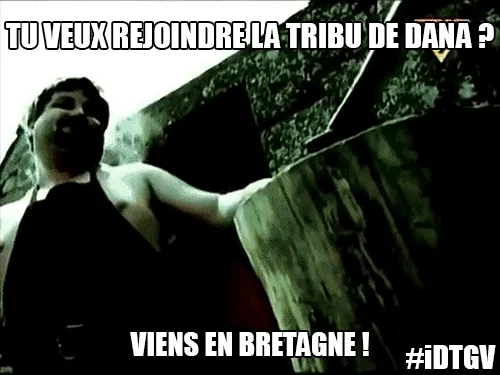
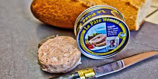
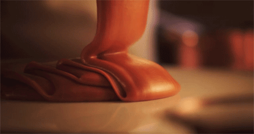
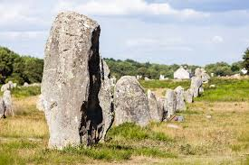
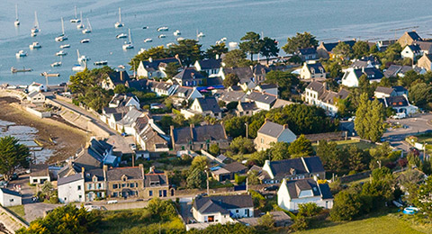

Colored Design
Top 10 des raisons d'aimer la Bretagne
Aaaah la Bretagne... ses paysages, ses traditions, ses légendes, ses spécialités culinaires, son climat et... ses bretons! Du Bar Pointin Still à Quimper au port de Ouessant en passant par la créperie de Concarneau bienvenue dans l'enfer normand. Un Top pas très original, totalement objectif, bref la Bretagne vue par un Breton!
1. Le paté Henaff
Si la Sarthe a ses rillettes, la Bretagne peut compter sur ces conserves de pâté fabriquées par une entreprise qui a toujours revendiqué son ancrage dans la région. Et pour une fois qu'une spécialité bretonne n'est pas constituée à 50% de beurre, on va le noter.
2. La Crêpe
Aaaah la Bretagne... ses paysages, ses traditions, ses légendes, son climat et... ses crêpes! Rien ne vaut une bonne crêpe accompagnée de cidre! Que du plaisir! A toutes les sauces elle saura ravir nos petites papilles gustatives et s'ancrée dans nos bourrelets. Si vous êtes des quiches en cuisine et que vous savez toujours pas la recette des crêpes c'est par ici !

4. Le Caramel au Beurre-salé
L'une des 8 merveilles du Monde sans aucun doute! Et dans Caramel au Beurre-salé il y a beurre salé, inutile de vous dire que le Caramel au Beurre-doux serait une pure abération à la hauteur de la pizza ananas! Donc qu'on soit clair: le caramel breton c'est la vie! Dans les textes sacrés il est écrit que les personnes n'aimant pas le caramel iront en enfer... à vous de choisir!
5. Le Kouign-amann
Officielement le gâteau le plus riche en calorie au monde. Une bouchée et vous sentez votre sang s'épaissir dans vos artères. Selon le Gorafi, donc information totalement vérifiée, c'est grâce aux calories du Kouign-amann que nous pouvons nous baigner en Bretagne été comme hiver sans être litéralement congelé.
Hein quoi?! On vous a donné faim? Bon même si on aurait aimé parler de la Galette saucisse, du Far Breton ou encore de l'Andouille de Guémené on va arréter de vous martyriser. Retour sur notre top des raisons d'aimer la Bretagne et les Bretons
6. Les Autoroutes Gratuites
Oui oui gratuites...genre pas de péages. Avec le fric économisé, les bretons vont racheter Mc Donald et vous allez pas comprendre quand vous trouverez des galettes bretonnes dans les Happy Meal!
7. La forêt de Brocéliande et ses Légendes
Ouais, celle de Merlin, de la Fée Morgane et de toute l’équipe. Merlin est le fils d'une vierge qui a été séduite durant son sommeil par une créature démoniaque. Déjà un début pas facile facile. De son père le démon, Merlin a hérité de grands pouvoirs : il sait parler dès sa venue au monde, il a la capacité de maîtriser toutes les formes de magie, sait prédire l'avenir et deviner le passé, il possède aussi la faculté de se métamorphoser et de parler aux animaux. Souviens toi Merlin, de grands pouvoirs impliquent de grandes responsabilités... RIP Uncle Ben!

8. Le Breton
Et ici on ne parle pas du peuple breton mais bien de la langue. Quelle langue magnifique encore parlée par 207 000 irresistibles bretons! Cette langue celtique peut être enseignée dans les écoles. Vous y entendrez surement Demat, Kenavo, Degemer mat et beaucoup moins Koc'h ou encore Penn boultouz (on vous déconseille de chercher ce que ça veut dire)
9. Les Dolmens
Les anglais ont Stonehenge et nous, nous avons Carnac. Les alignements de Carnac forment un site d'alignements mégalithiques exceptionnel. La région de Carnac réunit la plus forte concentration de mégalithes du monde et est constituée d'alignements de menhirs, de dolmens et d'allées couvertes et réparti sur plus de quatre kilomètres. Les alignements de Carnac sont les ensembles mégalithiques les plus célèbres et les plus impressionnants de cette période avec près de 4 000 pierres levées vers 4500 ans avant notre ère. Rien à ajouter.
10. Ses villes, ses fortifications et ses Phares
Vannes, Brest, Damgan, La Baule, Roscoff ou encore Saint Malo toutes ces communes sont magnifiques et méritent d'être visitées au moins une fois. Toujours bien placée dans le classement des villages préférés des français, les villages bretons ont gagné à deux reprises! Bref le top du top.
Aller il est temps de se dire au revoir... on aurait pu continuer la liste mais il faut pas abuser des bonnes choses! ;)